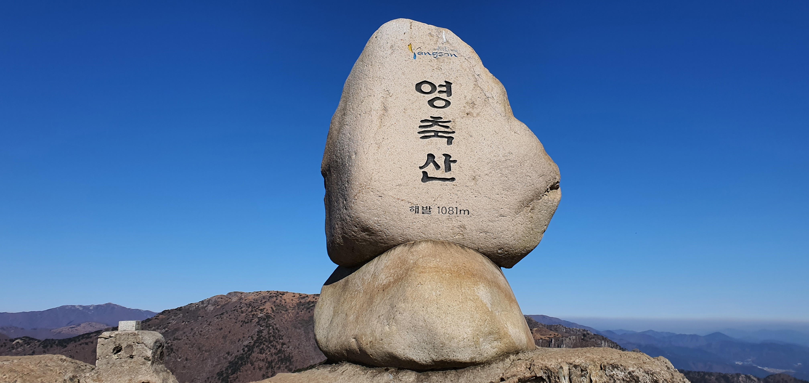

영축산은 울산광역시 울주군 삼남면 방기리와 경상남도 양산시 하북면과 원동면에 경계를 이루는 산이다. 경상남도 양산시 하북면과 원동면에 걸쳐 있는 산으로 영남 알프스의 일부를 이루는 산이다. 높이는 1,082.235미터. 신불산 아래에 위치하며 울산광역시와 양산시 경계지역에 있다. 단조늪이 있다. 영취산, 취서산(鷲棲山)과 축서산 등으로도 불린다. 대체로 동쪽은 급경사를 이루어 암벽이 병풍을 편 듯 늘어서 있고, 서쪽은 완만하여 계곡이 발달되어서 대조를 이루고 있다.
